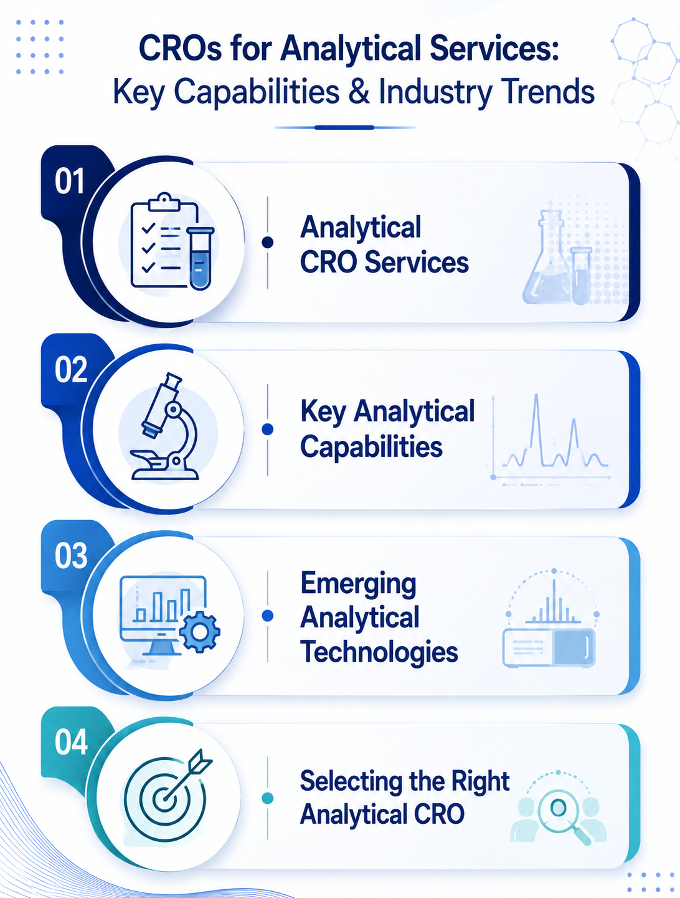

CROs for Analytical Services: Key Capabilities & Industry Trends
9 August 2026

The pharmaceutical and biotechnology industries rely on analytical testing across different stages of drug development. Contract Research Organizations (CROs) providing analytical services can support pharmaceutical and biotech companies with specialized testing, characterization, analytical method development, and other analytical activities.
Analytical services can cover the identification, characterization, purity, quality, and stability of drug substances, drug products, raw materials, and related materials. Depending on the project, analytical CROs may provide services ranging from analytical method development and validation to impurity analysis, stability testing, physicochemical characterization, and specialized analytical testing.
The analytical CRO landscape is diverse, with providers offering different combinations of technologies, instrumentation, analytical expertise, and testing capabilities. For sponsors, selecting an appropriate analytical CRO can depend on the molecule type, development stage, analytical objective, dosage form, required analytical techniques, and applicable regulatory requirements.
Analytical CRO Services
Analytical CRO services can support multiple activities across the pharmaceutical development process. The specific analytical strategy generally depends on the drug substance or product, development stage, analytical objective, and applicable requirements.
Analytical services may include analytical method development and validation, assay and impurity testing, chromatographic analysis, stability studies, physicochemical characterization, elemental analysis, residual solvent testing, and testing of raw materials or finished products.
The analytical techniques selected depend on the material being evaluated and the purpose of the analysis. Commonly used technologies include HPLC, UHPLC, GC, LC-MS, GC-MS, ICP-MS, UV/Vis spectroscopy, and other analytical platforms.
Key Areas of Analytical CRO Expertise
Analytical Method Development and Validation
Analytical method development involves establishing suitable procedures for the detection, identification, quantification, or characterization of specific analytes.
Depending on the analytical objective, analytical methods may be developed using techniques such as HPLC, UHPLC, GC, LC-MS, GC-MS, UV/Vis spectroscopy, and other analytical platforms.
Impurity and Degradation Product Analysis
Impurity analysis can be an important component of pharmaceutical development and quality assessment. Analytical laboratories may evaluate process-related impurities, degradation products, residual solvents, and other specified or unspecified impurities, depending on the material and analytical requirements.
Chromatographic and mass spectrometric techniques can be used to detect, quantify, and, where required, support the characterization of impurities and degradation products.
Stability Testing
Stability studies are used to evaluate how the quality of a drug substance or drug product changes over time under specified storage conditions.
Analytical Contract Research Organizations (CROs) may support stability programs through assay, related substances, degradation product, dissolution, water content, and other product-specific testing, depending on the dosage form and study protocol.
Physicochemical Characterization
Characterization services can help establish the physical and chemical properties of pharmaceutical materials. Depending on the molecule and development requirements, testing may include particle size analysis, polymorphism, crystallinity, thermal analysis, spectroscopy, solubility, moisture analysis, and other physicochemical assessments.
For complex molecules and biologics, characterization may involve additional analytical approaches appropriate to the molecular structure and product type.
Elemental and Trace Analysis
Elemental analysis may be required for pharmaceutical materials, raw materials, or specific development programs. Techniques such as ICP-MS and ICP-OES can be used for the determination of selected elemental impurities.
Dissolution and Drug Product Testing
For suitable pharmaceutical dosage forms, analytical Contract Research Organizations (CROs) may support dissolution testing and other dosage-form-specific quality assessments. Testing can involve evaluating drug release under defined experimental conditions and may be combined with other analyses such as assay, related substances, content uniformity, and physical testing, depending on the product.
Factors to Consider When Selecting an Analytical CRO
Selecting an analytical CRO generally involves both technical and operational evaluation. Depending on the project, sponsors could consider the CRO's analytical platforms, relevant experience with the molecule type, method development capabilities, instrumentation, sample capacity, data handling processes, and project timelines.
Sponsors may also evaluate the analytical CRO's experience with the relevant dosage form, sample matrix, analytical method, development stage, and intended market requirements.
Trends Influencing Analytical CRO Services
Increasing Analytical Complexity
As pharmaceutical development expands across small molecules, peptides, oligonucleotides, proteins, antibodies, and other complex modalities, analytical requirements can vary substantially between programs.
This can increase the need for specialized analytical approaches capable of addressing molecular characterization, impurities, degradation products, structural attributes, and product-specific quality considerations.
Growth of Mass Spectrometry-Based Analysis
Mass spectrometry continues to be an important analytical technology across pharmaceutical research and development. Techniques such as LC-MS/MS and high-resolution mass spectrometry (HRMS) can support applications including impurity characterization, molecular identification, structural analysis, metabolite investigations, and quantitative analysis.
Advanced Chromatographic Techniques
Chromatographic technologies remain central to pharmaceutical analytical testing. HPLC and UHPLC can be applied across areas such as assay determination, impurity profiling, stability testing, and characterization.
Advances in instrumentation, columns, detectors, and data-processing capabilities can provide analytical laboratories with additional options for addressing complex analytical requirements.
Increasing Characterization Requirements
The development of increasingly complex pharmaceutical molecules and formulations can require broader analytical characterization.
Depending on the product, analytical programs may involve multiple techniques to evaluate identity, purity, potency, impurities, degradation products, physical properties, and other critical characteristics.
Automation
Analytical laboratories are also adopting greater levels of automation, laboratory information management systems (LIMS), electronic data handling, and instrument integration.
The Role of Innovation in Analytical CRO Services
Innovation in analytical CRO services can involve the development of more sensitive analytical methods, improved sample preparation approaches, advanced instrumentation, automated workflows, and new analytical techniques.
For analytical CROs, the ability to select appropriate analytical technologies and develop methods suited to specific molecules and analytical objectives can be an important part of supporting pharmaceutical and biotechnology development programs.
As drug modalities and development programs become more diverse, analytical strategies may increasingly need to be fit for purpose, scientifically justified, and aligned with the intended use of the generated data.
Strengthening Digital Visibility with Pharma Content Solutions
Pharma Content Solutions helps analytical CROs build stronger digital visibility by creating SEO-optimized, service-focused content that presents their analytical capabilities, technologies, testing services, and technical expertise.
Through SEO content, service pages, technical articles, application-focused content, and digital marketing solutions, Pharma Content Solutions helps CROs communicate their capabilities to relevant B2B audiences and improve their visibility when pharmaceutical and biotechnology companies are researching analytical testing and analytical CRO service providers.